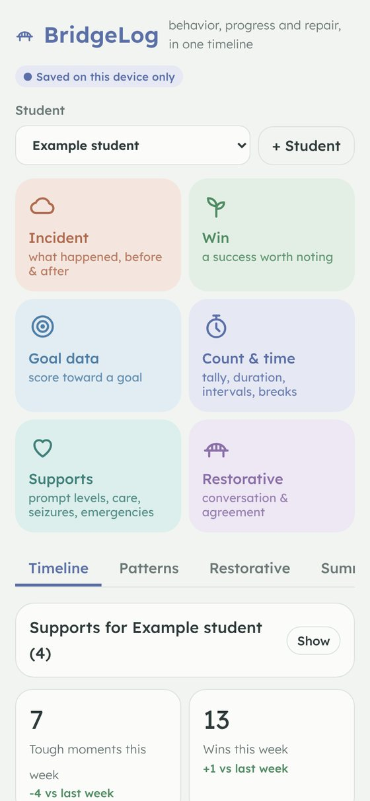
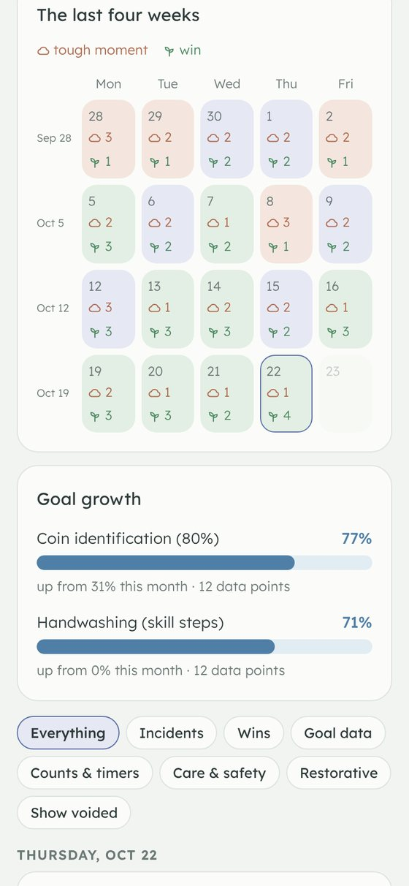
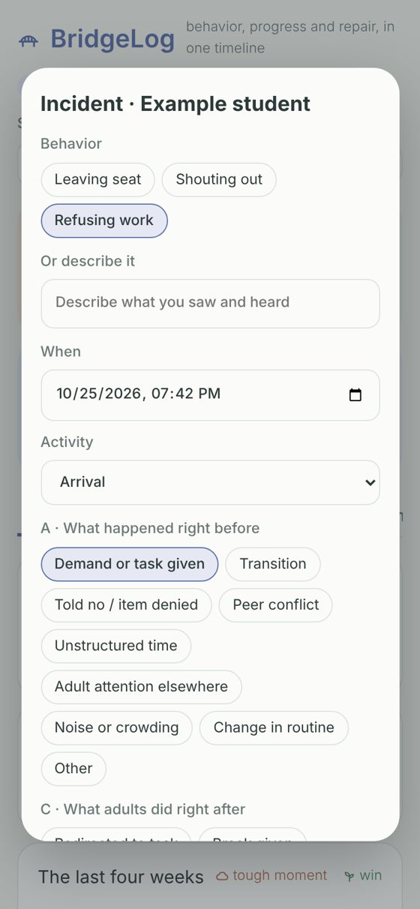
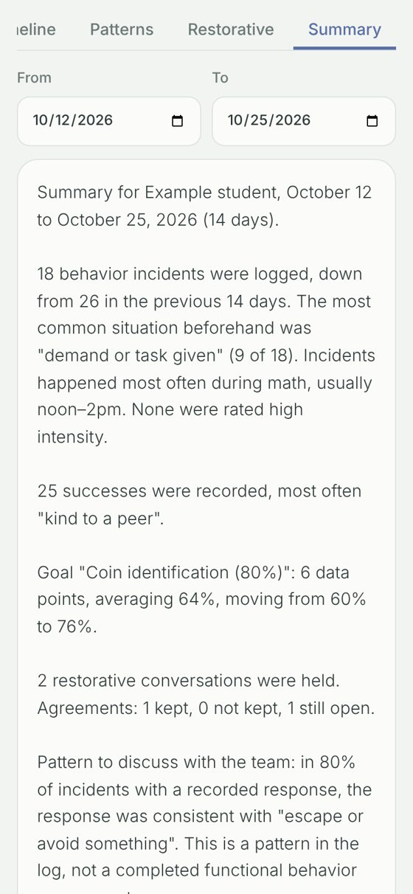

The behavior log that fits in the middle of a lesson.
Tough moments, wins, IEP goal data and restorative conversations, all on one timeline for each student. One tap to log, and nothing ever leaves your device.
Free during the pilot. Works on phones, tablets and laptops. No account needed.

See the month the way a team would
No stock-market charts. Each school day is a tile: little clouds for tough moments, sprouts for wins. Goals show as a growth bar with a plain sentence underneath.



Everything the day actually needs
Tough moments, with context
What happened right before, what adults did right after, intensity and minutes. Tap, don't type.
Wins count too
Asked for a break, used a coping strategy, kind to a peer. Successes sit right next to the hard days.
IEP goal data
Log a score after each session and watch each goal's growth over the month.
Restorative, built in
The five restorative questions, the agreement, a check-back date, and whether it was kept.
Patterns for the team
What usually comes before a tough moment, which activity, what time of day, and what it may be getting the student.
Records you can trust
Entries lock at the end of the day. Nobody can quietly edit or delete a log; later notes are added and dated.
Student data never leaves the device
Most behavior apps store student records on their own servers. BridgeLog doesn't have servers. Everything stays in the browser on the device you use, and you can save a backup file wherever your school keeps student records.
- No accounts, logins or passwords
- Nothing is sent over the internet
- Backup and spreadsheet export whenever you need them
- Encourages initials, not full names
- Optional passcode encrypts everything on the device and locks the app when it isn't in use
- Record check confirms, against a backup, that no record went missing or was changed
- The app's security policy blocks it from sending data anywhere, so the browser enforces the promise
Made by someone who does this every day
I'm Jacob King, a special education paraprofessional in Northern California. For the last two years I've logged behavior on whatever paper was nearby, and watched case managers turn those scraps into progress reports. BridgeLog is the tool I wanted: quick enough to use mid-lesson, honest enough to hold up at an IEP meeting, and built around repair, not just consequences.
Join the pilot
I'm looking for teachers, paras and school teams to use BridgeLog for two weeks and tell me what's missing. It's free, and your feedback decides what gets built next. Please check your school's rules before using it with real students.
Interested in a school or district license? Same address.
Questions
What does it cost?
Nothing during the pilot. Later there will be a free single-classroom version, plus school and district licenses that include setup help.
Do I need to install anything?
No. Open it in any browser. On a phone you can add it to your home screen from the browser's share menu so it opens like an app.
Can my teacher and I see the same student's log?
Yes, without a server. Use "Share with a teammate" to make an encrypted file for one student, send it the way your school sends student records, and tell them the share passcode in person. Adding it merges into their log instead of replacing anything, and each entry shows who logged it.
What happens to a student's data at the end of the year?
"Archive and remove" saves a spreadsheet and a BridgeLog file for that student, asks you to confirm the archive is where your school keeps records, then removes only that student from the device and notes it in a removal log. Nothing is deleted automatically, because your school sets how long records are kept.
Does it work without internet?
Yes. After you open it once, BridgeLog keeps a copy of itself on the device and opens without a connection. Your logs were never online to begin with.
What happens if I clear my browser?
Clearing site data erases the log on that device, which is why the Data tab has a backup button. Save a backup regularly.
What if a phone or school laptop gets lost or shared?
Turn on a passcode in the Data tab. Everything on the device is then encrypted, backups are encrypted too, and the app locks itself after a few minutes without use. A forgotten passcode can't be recovered by anyone, so keep backups.
How do I know records haven't been altered?
Entries lock at the end of the day they're entered. On top of that, the Record check compares the device against any backup file and lists anything missing or changed since it locked.
Does it diagnose why a behavior happens?
No. It shows patterns in what's been logged so your team can discuss them. A behavior's function is confirmed through a functional behavior assessment by a qualified team.